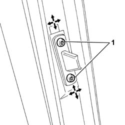
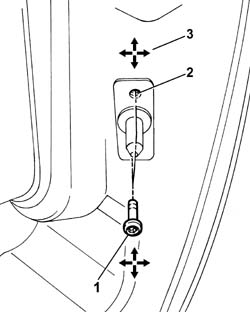
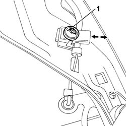

7020C04 SLIDING SIDE DOOR - ADJUSTMENTS FOR CENTRING AND PROFILING - INCLUDES SEAL ADAPTATION IF NECESSARY
- Path
- Procedures > 70 FITTINGS > 7020 LOAD COMPARTMENT DOORS > 7020C SLIDING SIDE DOOR > 7020C04 SLIDING SIDE DOOR - ADJUSTMENTS FOR CENTRING AND PROFILING - INCLUDES SEAL ADAPTATION IF NECESSARY
- Kind
- repair procedure (removal / refitting; the operation number is the code)
- Applies to
- all engines; all production periods
- Interactive page
- https://sloeber94.github.io/elrnDB-fUlss/en/#/179007704
Applies to: all engines; all production periods
1. Loosen the bolts fixing the upper centering pin.

Applies to: all engines; all production periods
- Move the upper centering pin into the correct position using the slotted openings in the actual pin.
1. Loosen the bolts fixing the lower centering pin.
2. Move the upper centering pin into the correct position using the slotted openings in the actual pin.
3. The arrows indicate the possible movements for the adjustment.

Applies to: all engines; all production periods
1. Loosen the bolt fixing/adjusting the rod on the sliding side door lower support.

Applies to: all engines; all production periods
- Move the bolt fixing/adjusting the rod on the sliding side door lower support.